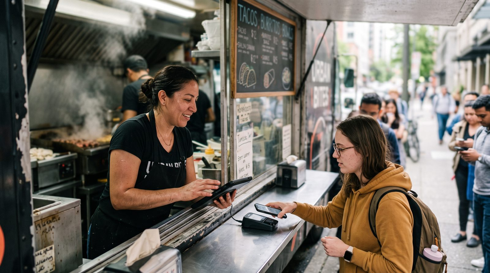

Sistema PDV para food truck: como vender rápido (inclusive offline)
Escolher um sistema PDV para food truck não é a mesma coisa que escolher o caixa de uma loja fixa. Na comida de rua, você vende em pé, dentro de um espaço apertado, movido a bateria, com sinal de internet que vai e volta, e com uma fila que não pode parar. Este guia mostra o que realmente importa num programa para food truck ou trailer de comida: modo offline de verdade, venda rápida, Pix e pagamento por aproximação, mobilidade e controle do estoque do dia. Vale tanto para quem usa o termo brasileiro sistema PDV quanto para quem, em Portugal, procura um software de faturação / programa POS para food truck.

Por que vender em um food truck é diferente
Um restaurante tem balcão fixo, tomada na parede e Wi-Fi estável. O food truck, e o trailer de comida, a barraca de feira ou a moto de delivery, vive o oposto. O ambiente impõe restrições que mudam completamente o que você deve exigir de um sistema de vendas:
- Conexão instável. Em feiras e eventos, dezenas de pessoas disputam a mesma rede móvel. O sinal cai justamente no horário de pico.
- Espaço mínimo. Não há lugar para computador, gaveta de dinheiro grande e impressora robusta. O equipamento precisa caber na palma da mão.
- Energia limitada. Tudo roda a bateria ou em um gerador modesto. Cada watt conta.
- Fila em pé. O cliente de rua não senta nem espera. Cada segundo a mais no atendimento vira desistência.
- Cardápio enxuto. Você trabalha com poucos itens, mas vende muitos por minuto.
Por isso, recursos que brilham num ERP de loja, relatórios profundos, dezenas de telas, integrações complexas, importam menos aqui. No food truck, vence a simplicidade que aguenta a rua.
Modo offline: a função que não pode faltar
Se você só prestar atenção a um item deste guia inteiro, que seja este. Em comida de rua, o modo offline é imprescindível. Não é um luxo nem um "bom ter", é o que separa uma noite de vendas de um prejuízo.
Há uma diferença grande entre "modo offline real" e "offline parcial". Muitos sistemas só guardam a última tela ou permitem consultar o cardápio sem internet, mas não conseguem fechar a venda nem registrar o pagamento. Na hora da pressão, isso não resolve. Pergunte ao fornecedor, de forma direta: "consigo registrar uma venda completa, do pedido ao pagamento, com o celular em modo avião, e ela sincroniza sozinha depois?" Se a resposta não for um sim claro, siga procurando.
Funções essenciais para comida de rua
Além do offline, alguns recursos fazem diferença direta no faturamento de quem vende na rua.
Venda rápida e cardápio reduzido
O atendimento ideal de food truck cabe em poucos toques: escolher o item, ajustar a quantidade, cobrar. Procure um sistema que deixe você montar um cardápio enxuto com atalhos para os campeões de venda (o combo, a bebida, o adicional). Quanto menos telas entre o pedido e o "pago", mais gente você atende por hora, e menos fila se forma.
Estoque do dia
Você não controla um depósito; controla o que levou hoje. Um bom PDV permite registrar as quantidades do dia e dar baixa a cada venda, avisando quando um item está acabando. Isso evita o constrangimento de vender o que já acabou e ajuda a planejar a próxima saída com base no que realmente girou.
Mobilidade e bateria
O sistema certo roda em tablet ou celular, sem prender você a um hardware caro e pesado. Isso libera espaço na cabine, reduz o investimento inicial e facilita levar o caixa para fora do truck quando preciso (atender quem está no fim da fila, por exemplo). Como tudo depende de bateria, prefira um app leve e tenha sempre um carregador portátil de reserva.
Controle de fiado para clientes recorrentes
Quem fica fixo num ponto cria fregueses. Um recurso de controle de fiado (crédito de clientes) permite anotar "o cliente leva agora e paga depois" sem caderninho perdido, mantendo o registro organizado e cobrável. É simples, mas evita furo de caixa e mal-entendido.
Quer testar sem gastar nada?
Um PDV pensado para a rua deveria ficar pronto em minutos e funcionar mesmo quando a internet some. Monte o seu caixa grátis e leve para a próxima feira.
Criar meu caixa grátis, 5 minPix, pagamento por aproximação e maquininha
Na comida de rua, dinheiro vivo já não é maioria. O cliente quer pagar no Pix ou aproximar o cartão/celular, e quer fazer isso em segundos. Para não perder venda nem tempo, observe três pontos:
- Pix com QR Code à mão. Tenha o QR do seu Pix sempre acessível (impresso na janela e também no sistema), para o cliente escanear e pagar sem digitar nada.
- Pagamento por aproximação. A maquininha (ou o celular com função de recebimento) precisa aceitar contactless de cartão e carteira digital. É o que mais acelera a fila.
- Liberdade de maquininha. Este é o detalhe que mais protege sua margem: prefira um PDV que não obrigue você a usar a maquininha dele nem cobre comissão sobre cada venda. Assim você negocia livremente a menor taxa de cartão e fica com 100% do que vendeu.
A conta esperta: no fim do mês, a maior "mensalidade" do seu food truck não é o software, são as taxas de cartão. Um sistema que não trava você numa maquininha te deixa caçar a menor taxa.
Qual sistema PDV escolher para food truck (2026)
O mercado tem boas opções voltadas a food truck e comida de rua. Abaixo, nossa leitura prática, priorizando o que pesa na rua: modo offline real, velocidade de venda, mobilidade e custo honesto.
digabloPos
O digabloPos é um PDV em nuvem moderno que parece desenhado para a rua. O plano base é gratuito para sempre (sem prazo, sem cartão de crédito), fica pronto em cerca de 5 minutos e roda no tablet ou no celular que você já tem. O ponto mais forte para comida de rua é o modo offline real com sincronização automática: a fila continua andando mesmo quando o sinal cai, e tudo sobe sozinho quando a internet volta. Tem venda rápida para cardápio reduzido, controle de fiado para os fregueses, multimoeda, módulos opcionais que você ativa só quando precisa e não força comissão sobre os pagamentos, você usa a maquininha de menor taxa.
👍 Pontos fortes
- Grátis para sempre, sem compromisso
- Modo offline real + sincronização automática
- Venda rápida para cardápio enxuto
- Roda em tablet ou celular (mobilidade)
- Sem comissão obrigatória sobre vendas
- Controle de fiado (crédito de clientes)
- Multimoeda e módulos sob demanda
- Pronto para a nota fiscal eletrônica
👎 A verificar
- Marca mais nova que ERPs nacionais tradicionais
- Confirme a emissão fiscal homologada para o seu estado/país
- Alguns módulos avançados são pagos
Sistemas de "maquininha smart" (caixa na máquina)
Soluções que transformam a maquininha smart em um caixa completo são populares no food truck por concentrarem venda e pagamento num único aparelho de bolso, com bom funcionamento mesmo sem internet estável. Em contrapartida, costumam amarrar você ao adquirente daquela maquininha e às suas taxas, reduzindo a liberdade de negociar a menor tarifa de cartão.
PDV especializado em food truck (com eventos e cardápio por local)
Há sistemas focados no nicho, com recursos extras como agenda de eventos, cardápio que muda por local e integração com apps de delivery. São interessantes para quem roda muitos eventos, mas tendem a ser pagos por mensalidade e podem trazer mais recursos do que um trailer pequeno precisa no começo.
PDV/ERP de restaurante adaptado
Sistemas robustos de restaurante (com mapa de mesas, comandas e estoque completo) podem ser usados no food truck, mas costumam ser pesados demais para a operação de rua e nem sempre tratam o modo offline como prioridade. Funcionam, porém você paga por complexidade que talvez não use na janela de atendimento.
Tabela comparativa
| Critério | digabloPos | Maquininha smart | PDV de nicho | ERP de restaurante |
|---|---|---|---|---|
| Plano grátis para sempre | Sim | Não | Não | Não |
| Modo offline real + sync | Sim | Sim | Parcial | Parcial |
| Venda rápida (cardápio enxuto) | Sim | Sim | Sim | Médio |
| Roda em tablet/celular | Sim | Só na máquina | Sim | Sim |
| Liberdade de maquininha | Total | Travada | Varia | Geralmente |
| Controle de fiado | Sim | Varia | Varia | Varia |
| Tempo de configuração | ~5 min | Rápido | Médio | Médio/alto |
Comparação informativa elaborada em junho de 2026 com base em informações públicas dos fornecedores e em categorias de produto. Recursos e planos mudam com frequência, confirme tudo nos sites oficiais e verifique a emissão fiscal com a SEFAZ (Brasil) ou a AT (Portugal) antes de decidir.
Checklist antes de assinar
- Teste o offline de verdade. Coloque o celular em modo avião e tente fechar uma venda inteira, do pedido ao pagamento. Tem que funcionar e sincronizar depois.
- Cronometre a venda rápida. Quantos toques do item ao "pago"? Quanto menos, melhor para a fila.
- Confirme Pix e aproximação. O fluxo de pagamento precisa ser rápido e aceitar carteira digital.
- Fuja de comissão obrigatória sobre vendas e de maquininha travada, proteja sua margem.
- Verifique a mobilidade. Roda no aparelho que você já tem? Pesa pouco na bateria?
- Cheque o estoque do dia e o fiado, se você usa fregueses fixos.
- Confirme a parte fiscal para o seu enquadramento: NFC-e na SEFAZ do seu estado (Brasil) ou faturação certificada pela AT (Portugal), com o seu contador.
Perguntas frequentes
Qual o melhor sistema PDV para food truck?
É aquele que continua vendendo sem internet, registra um pedido em poucos toques e roda em tablet ou celular movido a bateria. Como a operação é na rua, com sinal instável e espaço apertado, o modo offline com sincronização automática costuma pesar mais do que qualquer outro recurso. Avalie também Pix, pagamento por aproximação, cardápio reduzido e estoque do dia.
Um PDV para food truck precisa funcionar sem internet?
Sim. Em feiras e eventos o sinal oscila ou cai, ainda mais com várias pessoas na mesma rede móvel. Um PDV com modo offline real registra as vendas localmente e sincroniza quando a conexão volta, sem travar a fila. Para comida de rua, essa é a função mais importante.
Dá para usar o celular como PDV de food truck?
Dá. Um bom PDV em nuvem roda no navegador do celular ou em um tablet barato, sem hardware pesado na cabine. Isso reduz custo, economiza espaço e facilita a mobilidade. Tenha um carregador portátil para a bateria aguentar o pico.
Preciso emitir nota fiscal no food truck?
Depende do enquadramento e do estado. Muitos food trucks operam como MEI ou no Simples Nacional, e a obrigatoriedade da NFC-e varia. Escolha um sistema já pronto para a nota fiscal eletrônica e confirme a obrigatoriedade com a SEFAZ do seu estado e com o contador (em Portugal, com faturação certificada pela AT).
Como controlar fila e estoque do dia?
Use um cardápio reduzido com atalhos para os mais vendidos, registre o estoque do dia (o que você levou) e deixe o sistema dar baixa a cada venda. Você sabe na hora quando um item está acabando, evita vender o que não tem e mantém a fila andando.
Pronto para a próxima feira?
Monte seu caixa gratuito em cerca de 5 minutos, sem compromisso e sem cartão de crédito. Funciona offline, roda no seu celular e te deixa livre para escolher a maquininha de menor taxa.
Começar grátis, 5 min